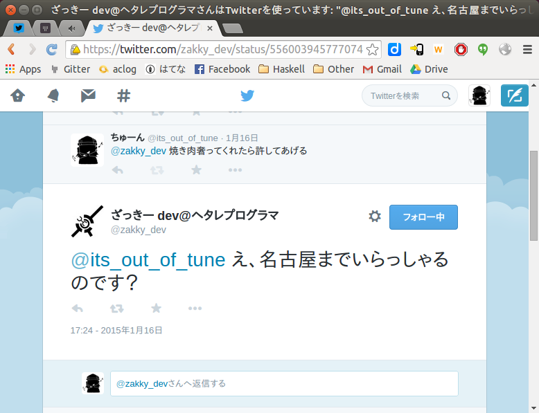
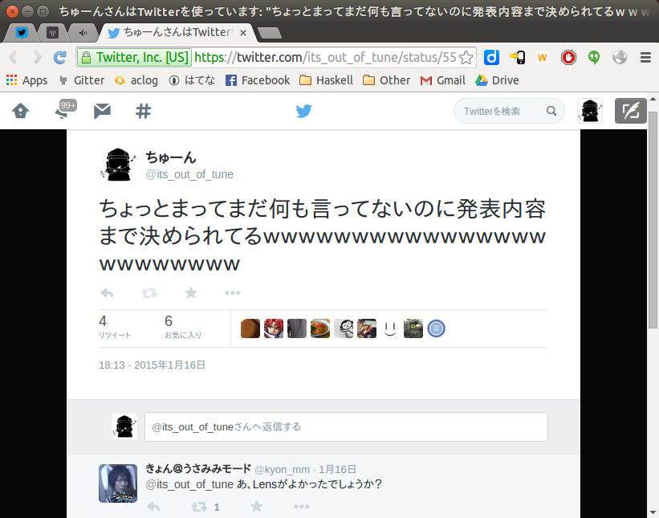

関数型ギークがOTRに転職して
もうすぐ一年になるそうです
2017/2/27 ちゅーん(@its_out_of_tune)
for チョコ meets ワイン
自己紹介
- 野生のHaskller(29♂)
- 2016年春よりなごやか
- OTR 基盤チームの道化枠
- スケボーできてない
- ボルダリングできてない
- スプラトゥーン えいえんのA帯
- ゲーム実況とかはじめた

HN: ちゅーん
Twitter:
@its_out_of_tune
Github:
tokiwoousaka
はじめに
自己紹介
今日のおはなし
自己紹介
自分語り
自己紹介
です
自己紹介
ご了承ください
自己紹介
というわけで……
ちゅーんさんは
いかにしてギークになり
社畜になり
そしてニートになったのか
誕生
1987/7/23
誕生
東京都
(たしか)世田谷区のとある病院
誕生
雷の鳴り響く
嵐の夜に……
誕生
資格ヲタクな父と
ゲームマニアな母
誕生
ちゅーんさん
爆誕
プログラミングとの出会い
小学5年生になったある日
プログラミングとの出会い
父が遊んでいた
VB5に興味
プログラミングとの出会い
おれ「これゲーム作れる？」
父「作れるよ」
おれ「じゃあやるわ」
プログラミングとの出会い
ずるずるとVB厨に
そして社畜へ……
高校卒業後
そして社畜へ……
フリーターとか
色々あって
そして社畜へ……
10年弱のVB歴を片手に
そして社畜へ……
小さな人材派遣会社
そして社畜へ……
えっちな社長と
陽気な専務
そして社畜へ……
めっちゃ良い人達
そして社畜へ……
しかし
仕事は客先常駐
そして社畜へ……
契約社員？出向？
ナニソレ
そして社畜へ……
通勤片道最大1.5h
そして社畜へ……
9:00am始業
そして社畜へ……
毎日23:00まで残業
そして社畜へ……
まぁ
それは良いとして
なっとくがいかない
なっとくがいかない
なっとくがいかない
出来のわるい
共通フレームワーク
なっとくがいかない
大量のボイラープレート
なっとくがいかない
数百行
多い時には千行以上の
メソッド
なっとくがいかない
アンチパターンの
なっとくがいかない
オ ン パ レ ー ド
なっとくがいかない
唯一
クソコードを渡るための
羅針盤
なっとくがいかない
膨大な量の
エクセルドキュメント
なっとくがいかない
なぜなのか
そもそも向いてない
そもそも向いてない
そもそも向いてない
協力会社の人間として
もっと大事なこと
そもそも向いてない
社会人としての
常識とか
ぜんぜんわからん
そもそも向いてない
根本的に
そもそも向いてない
事務的な仕事が
超苦手
そもそも向いてない
エクセル資料を読むと死ぬ病
そもそも向いてない
客先常駐なので一人で孤立
そもそも向いてない
根本的な「仕事のしかた」を
教えてくれる人はいない
そもそも向いてない
業績 最悪
そもそも向いてない
なんかもう
そもそも向いてない
ぜんぜん
そもそも向いてない
楽しくない
そもそも向いてない
今思うと、かなりメンタルやられてたと思う
Haskellとの出会い
丁度その頃
Haskellとの出会い
Twitterで見かけた
Haskellとの出会い
不思議なワード
Haskellとの出会い
関数型言語
Haskellとの出会い
関数型？
Cみたいにプロシージャを
関数って呼ぶ言語のこと？
Haskellとの出会い
Google先生
つ「LISP」
Haskellとの出会い
めっちゃシンプルな構文
Haskellとの出会い
息をするように
高階関数
Haskellとの出会い
すごーい!
なにこれなにこれ!!
Haskellとの出会い
もっと関数型やりたい!!
Haskellとの出会い
やるならナウい言語が良い
-> Haskell
転職からニートへ
Haskellの勉強を切っ掛けに
転職からニートへ
関数型のコミュニティに
がつがつ参加
転職からニートへ
出会い
転職からニートへ
高度な知識や
スキルを武器に
転職からニートへ
第一線で戦う人達
転職からニートへ
俺はこのままで
良いんだろうか……
転職からニートへ
転職しよう!
転職からニートへ
→都内の某
ソシャゲ開発会社へ
転職からニートへ
一ヶ月後
転職からニートへ
社長「おまえクビな」
おれ「まじで」
よし、休もう!
だいぶつらみが
貯まっていたので
よし、休もう!
親に甘えて
よし、休もう!
がっつり休む事に
よし、休もう!
無限に休んでも
いられないので
よし、休もう!
就職活動も兼ねて
よし、休もう!
Haskellコミュニティには
積極的に顔を出す
ちゅーんさんは
いかにして名古屋化し
どのように開発し
学んでいるのか
そんな頃
2015年某月某日
そんな頃

そんな頃

そんな頃

そんな頃
当日
そんな頃
米田の補題と
Operationalの話
そんな頃
詳細は
当時の資料を見てね
そんな頃
とにかく
そんな頃
2016/04
そんな頃
無事名古屋化
なにやってるの？
基盤チーム
なにやってるの？
共通フレームワーク
なにやってるの？
ライブラリ
なにやってるの？
更新、拡張、メンテナンス
なにやってるの？
時々
他案件のお手伝いとか
どんなふうに働いてるの？
スクラムをベースに
どんなふうに働いてるの？
チームの生産性を
最大化しながら……
どんなふうに働いてるの？
言うは安し
- 透明性の高いチーム？
- 自己組織化？
- 機能横断的？
- 効果的なふりかえり？
どんなふうに働いてるの？
果てなき旅路
- コストを最小に
- 効果を最大に
- 提供すべき価値は何か
- 提供できる価値は何か
- 最強のアジャイルチームとは？
どんなふうに働いてるの？
なるほどわからん
どんなふうに働いてるの？
常に模索しながら働く
どんなふうに働いてるの？
Q : すごい大変じゃないですか
A : はい。
これまでの仕事と違うこと
これまでの仕事と
違うこと
これまでの仕事と違うこと
- 裁量の大きさ : 圧倒的モチベーションの差
- チームで働く : 優秀な仲間が居る安心感
- タスクの細分化 : 生産性の見える化
- 厳しいレビュー : 仕事の価値を評価
- etc... 多すぎて語りきれない
これまでの仕事と違うこと
ひとつ上げるなら
これまでの仕事と違うこと
「チームで働く」
これまでの仕事と違うこと
だから出来ること
これまでの仕事と違うこと
苦手と向きあう
土台がある
これまでの仕事と違うこと
例:
これまでの仕事と違うこと
チームメンバーの認識
これまでの仕事と違うこと
ちゅーんさんに
膨大な情報を
与えると死ぬ
これまでの仕事と違うこと
へーきへーき!
得意なことは
フレンズによって
違うから!!
これまでの仕事と違うこと
できない事を
無理して一人で抱えない
これまでの仕事と違うこと
ペア作業 :
苦手を乗り越えるチャンス
これまでの仕事と違うこと
Q : 以前と比較して
良くなりましたか？
A : はい。
ちゅーんさん自身が
どう変わったのか
どのようになりたいのか
どう変わったのか
成長したこと
どう変わったのか
- ホウレンソウの爆速化 : 30分も悩んでからでは遅い
- 作業見積り精度向上 : 計画外の再見積りはかなり正確に
- 品質に対する意識向上 : テストは十分か？
- 仕事上の無駄が激減 : こまめなタスクの見なおし
- PO的な視点、スクラムマスター的な視点の習得
- .NETやJenkins関連の知識++
- etc. etc.